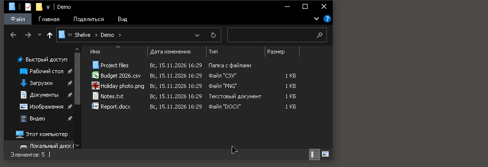
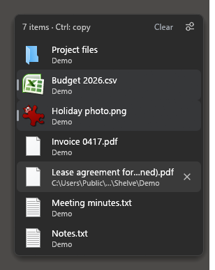

Shelve
A file shelf at the screen edge for Windows: park files while you drag them somewhere else.
Полка для файлов у края экрана Windows: положите файл, пока ищете, куда его перетащить.
Windows 10 and 11. Free and open source. One file, no installer, no administrator rights.
Windows 10 и 11. Бесплатно, с открытым кодом. Один файл, без установщика и прав администратора.

How it works
Как это работает
- Start dragging a file and take it to the edge of the screen. A small shelf slides out.
- Drop the file on the shelf and let go of the mouse.
- Open the folder or program where the file belongs and drag it there from the shelf.
- Начните тащить файл и доведите его до края экрана. Оттуда выедет небольшая полка.
- Бросьте файл на полку и отпустите мышь.
- Откройте папку или программу, куда нужен файл, и перетащите его туда с полки.
Good to know
Полезно знать
- The shelf keeps only links. Nothing is copied or moved until you drag a file off it. Hold Ctrl when you let go to copy instead of move.
- Pick several rows as in Explorer and drag them off together.
- Ctrl+Alt+D or the tray icon opens the shelf without dragging.
- Light or dark, following Windows. English or Russian, chosen in the settings.
- Portable: keep the settings next to the program, and Shelve runs from a flash drive without leaving files or registry entries behind.
- Полка хранит только ссылки. Ничего не копируется и не переносится, пока вы сами не перетащите файл с полки. Держите Ctrl, когда отпускаете, и будет копия.
- Выделите несколько строк, как в Проводнике, и перетащите их разом.
- Ctrl+Alt+D или значок у часов открывает полку без перетаскивания.
- Светлая или тёмная вслед за Windows. Русский язык включается в настройках.
- Портативная: храните настройки рядом с программой, и Shelve запустится с флешки, не оставив ни файлов, ни записей в реестре.

The file is not signed, so on the first run Windows SmartScreen warns: click "More info", then "Run anyway".
Файл не подписан, поэтому при первом запуске Windows SmartScreen предупредит: нажмите «Подробнее», затем «Выполнить в любом случае».